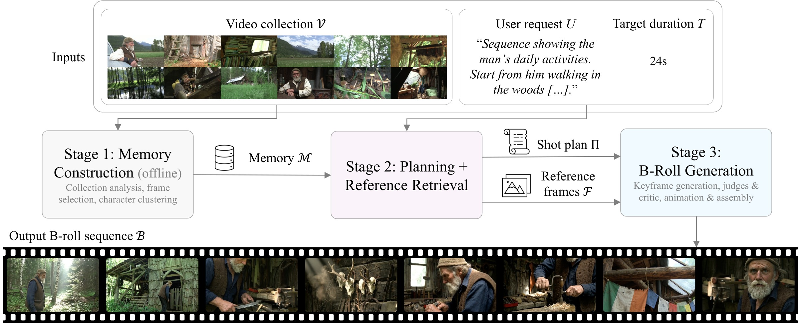
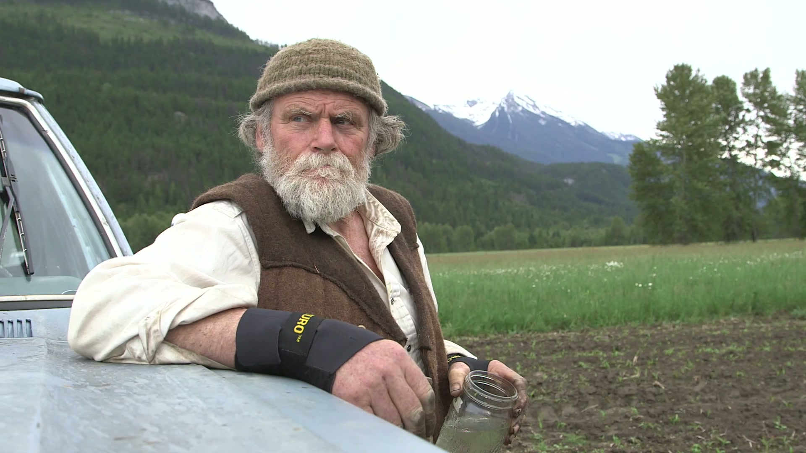

1Adobe Research2Czech Technical University in Prague
SIGGRAPH Asia 2026 Conference Papers
MemComposer builds a structured, entity-centric memory of a user's raw video collection, then uses it to plan, retrieve, and generate multi-shot B-roll that follows a natural-language request while preserving the collection's characters, settings, and style — including shots that were never filmed.
Given a user's video collection of over 10 hours of captured footage, MemComposer generates a B-roll sequence that follows a natural-language request while preserving the characters, settings, and style of the source footage — including shots and compositions that were never filmed. User collection footage and thumbnails are copyrighted and belong to EditStock.
We introduce an approach for collection-grounded B-roll sequence generation. Given a user's video collection, a directive given in natural language, and a target duration, the goal is to produce a multi-shot sequence that complements the user's primary footage (A-roll) while preserving the collection's characters, settings, objects, and style. This task is challenging as one must choose the visual evidence from hours of captured footage that should guide the generation of each shot in the sequence.
We address this challenge with MemComposer, a three-stage system that turns raw footage into a structured memory with visual references (characters, settings, objects, and style) and uses it to plan, retrieve, and generate grounded B-roll sequences. First, in a one-time offline stage, MemComposer constructs an entity-centric memory from raw video. Second, it uses the memory and user directive to plan a grounded sequence and retrieve conditioning frames for each shot. Third, it iteratively generates and critiques the sequence to enforce identity, setting, and sequence-level consistency.
Against an ungrounded text-to-video planner, MemComposer wins 60.0% of prompt-adherence and 92.8% of visual-alignment comparisons. Against retrieval-only sequences assembled from captured footage, MemComposer wins 94.5% of prompt-adherence comparisons, while retrieval-only sequences are preferred for visual alignment in 58.2% of comparisons.

A vision-language model distills hours of redundant video into a dense, entity-centric reference bank. Frame selection balances view-diverse character shots against setting context, and a face-clustering pass consolidates each person into a global character sheet that separates permanent traits from transient ones.
An LLM decomposes the request into a shot-by-shot plan with camera moves and durations. Generation-informed retrieval then pulls the exact conditioning frames each shot needs, using character-gated queries and view-diversity constraints so identity is preserved rather than just semantic similarity.
Keyframes are generated shot by shot with text anchors and chained context. Per-shot judges verify identity and setting fidelity, and a sequence-level critic catches failures visible only in aggregate — repetitive shots, character drift — driving targeted regeneration before the clips are animated and assembled.
MemComposer synthesizes shots that were never captured while keeping the look of the source collection — covering requests that a retrieval-only editor cannot fulfill.
Injecting a target character sheet into the same collection memory keeps the landscape, fields, and visual style fixed while changing who appears. Pick a subject to see the same grounded setting with a different character.

"Slow paced montage of <character> working the land. Start from very wide shots of still nature and progressively move closer to the person working the land. End with closeup of the person's face." (41s)
Same request, three systems. MemComposer generates missing coverage while preserving the source collection's identity; Text-to-Video + Planner is plausible but generic; EditDuet stays grounded but is limited to footage it can retrieve.
"Sequence of the bakery storefront that slowly transitions into inside the bakery, followed by some footage of the run-down small town." (20s)
"Fast paced combination of shots of a man climbing up a rock wall. Interleave wide shots and close-ups, including multiple shots from multiple angles, and close-ups of hands, feet, and climbing rope." (32s)
@inproceedings{ham2026memcomposer,
title = {Memory-Guided B-Roll Generation from User Video Collections},
author = {Ham, Cusuh and Caba Heilbron, Fabian and Sivic, Josef and Russell, Bryan},
booktitle = {SIGGRAPH Asia 2026 Conference Papers (SA Conference Papers '26)},
year = {2026},
address = {Kuala Lumpur, Malaysia},
publisher = {ACM},
doi = {10.1145/3829340.3842282}
}